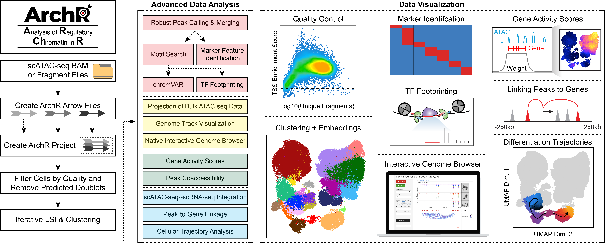

ArchR is a full-featured R package for processing and analyzing single-cell ATAC-seq data. ArchR provides the most extensive suite of scATAC-seq analysis tools of any software available. Additionally, ArchR excels in both speed and resource usage, making it possible to analyze 1 million cells in 8 hours on a MacBook Pro laptop.
To get started, we recommend running through the brief ArchR tutorial. For a detailed description of all of the features of ArchR applied to a test dataset of hematopoietic cells, please see the searchable full manual. If you havent already done so, we also recommend reading the publication to get a better idea of what ArchR can do.
Installation of ArchR
ArchR is designed to be run on Unix-based operating systems such as macOS and linux. ArchR is NOT supported on Windows or other operating systems.
ArchR installation currently requires devtools and BiocManager for installation of GitHub and Bioconductor packages. We highly encourage all users to utilize the renv environment and R version that have been confirmed to be functional with each stable release. This ensures that there are no incompatibilities between package dependencies. See this page of the full manual for full instructions.
If you do not wish to use the provided stable environment, then you would follow the below commands to install ArchR and its various dependencies:
First, install devtools (for installing GitHub packages) if it isn’t already installed:
if (!requireNamespace("devtools", quietly = TRUE)) install.packages("devtools")Then, install BiocManager (for installing bioconductor packages) if it isn’t already installed:
if (!requireNamespace("BiocManager", quietly = TRUE)) install.packages("BiocManager")Then, install ArchR:
devtools::install_github("GreenleafLab/ArchR", ref="master", repos = BiocManager::repositories())Lastly, install all of the ArchR dependencies that arent installed by default:
library(ArchR)
ArchR::installExtraPackages()If any of these steps fails, you should identify the offending package and troubleshoot that individual installation before proceeding. The one exception is Cairo (see below) which is installed by the ArchR::installExtraPackages() function. Cairo is not required but is highly recommended.
It is also highly recommended that you install MACS2, which requires python, and have the macs2 executable in your PATH variable. This will allow ArchR to call peaks using MACS2.
If you are installing on macOS
1. You will need a current version of GNU Fortran (gfortran). You can download and install the .dmg file from the gfortran github page. 2. You will need a current version of XQuartz. You can download and install the .dmg file from the XQuartz project page.
Known trouble spots for installation
Cairo graphics library
ArchR uses Cairo to rasterize plots. Cairo can be tricky to install depending on your system and we have had multiple reports of installation issues related to Cairo. We have removed the dependency on Cairo and ArchR will run fine without it but output plots will be vectorized and difficult to edit due to the presence of thousands of individual dots for the cells.
General problems encountered
1. Some of the dependencies in ArchR require the GNU Scientific Library (GSL), for example the DirichletMultinomial package. Instructions for installing GSL are shown in this issue.
If you have installed R through Conda, we have had reports of compile errors when installing ArchR that can be fixed by running Sys.setenv(CONDA_BUILD_SYSROOT="/") prior to executing the devtools::install_github() command as outlined in this post.
The ArchR Workflow

Previous versions of ArchR documentation
If you are using a version of ArchR other than the one shown at the top of this page, you can access previous versions of the ArchR documentation at the links below. Note that these snapshots only began in earnest as of ArchR version 1.0.3.
How to cite ArchR?
ArchR is published in Nature Genetics! You can find the publication here.
Granja JM, Corces MR et al., ArchR is a scalable software package for integrative single-cell chromatin accessibility analysis. Nature Genetics (2021)
Download an RIS-format citation file here.
Looking for scripts related to the publication? Check out the GitHub page for the publication.
Issues using ArchR?
If you have questions about ArchR usage, please refer to the the searchable full user’s manual, the FAQ section, and the publication. If you think the documentation on this website or in the function annotations is unclear, please post to the Github Discussions forum with the Q&A form. If there is a feature that you think is missing from ArchR and you have already searched the user’s manual, post to the Github Discussions forum with the Ideas form. If none of these options help, send us an email. We will do our best to respond to questions that are not otherwise answered in the documentation.